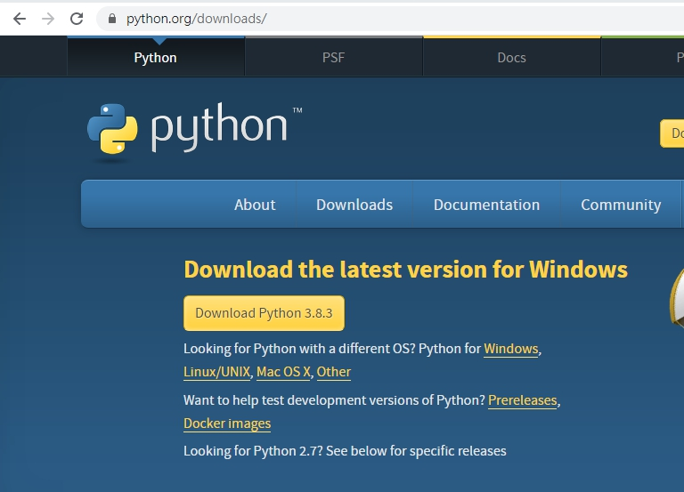

期中考前 <<
Previous Next >> W4~W6
W1~W3
下載python3.8.3

1.什麼是 Python？
Python﹐是一種廣泛使用的高階程式語言﹐屬於通用型程式語言。作為一種直譯語言﹐Python的設計哲學強調代碼的可讀性和簡潔的語法（尤其是使用空格縮排劃分代碼塊﹐而非使用大括號或者關鍵詞）。相比於C++或Java，Python讓開發者能夠用更少的代碼表達想法。不管是小型還是大型程式﹐該語言都試圖讓程式的結構清晰明了。
2.Python有什麼功能呢?
支援多種編程範式﹐包括物件導向、命令式、函數式和程序式編程。
a、數據分析與處理
Python通常被用來做數據分析﹐因為Python可直接進行調用﹐方便且靈活﹐可以根據數據分析與統計的需要靈活使用。Python也是一個比較完善的數據分析生態系統﹐其中matplotlib經常會被用來繪製數據圖表﹐它是一個2D繪圖工具﹐有著良好的跨平台交互特性。
b、Web開發應用
Python是Web開發的主流語言﹐但不能說是最好的語言。畢竟﹐在Web開發中應用多使用JavaScript﹐原因是已一套成熟的框架。Python開發的Web項目雖小而精﹐但支持最新的XML技術﹐而且數據處理的功能較為強大。
c、人工智慧應用
Python擁有強大而豐富的庫以及數據分析能力。而且Python是面向對象的動態語言﹐且適用於科學計算。不僅如此﹐Python提供了大量的API﹐這也正是因為Python當中包含著較多的適用於人工智慧的模塊。
3.學習Python可以從事什麼工作呢?
Python有以上那麼多強大的功能﹐那麼我學習完Python可以從事那些工作呢?我們為大家總結出以下幾個大方向
1）後端工程師：使用它單間網站，後台服務比較容易維護。如：Gmail、Youtube、知乎、豆瓣
2）自動化運維：自動化處理大量的運維任務
3）數據分析師：快速開發快速驗證，分析數據得到結果
4）遊戲開發者：一般是作為遊戲腳本內嵌在遊戲中
5）自動化測試：編寫為簡單的實現腳本，運用在Selenium/lr中，實現自動化。
6）網站開發：藉助django,flask框架自己搭建網站。
期中考前 <<
Previous Next >> W4~W6